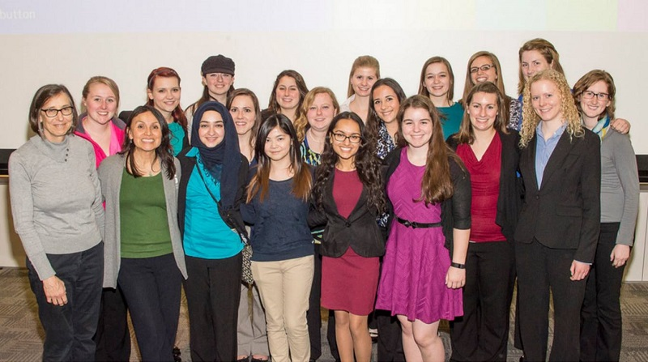
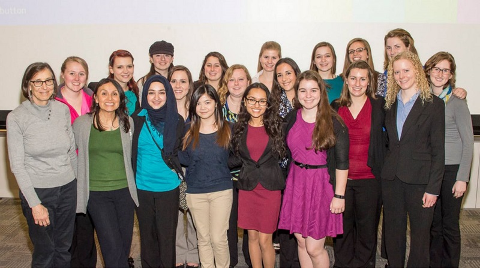

MSUWIC is creating a support network of current and past members with the goal of sharing knowledge and advice on diversity in computing-related fields. Are you interested in connecting with us? Consider joining the MSUWIC community!
Join the CommunityPresident: Lauren Allswede
Vice President: Sarah Fillwock
Treasurer: Nayana Kodur
Secretary: Erin O'Hara
Outreach Chair: Harshita Das
Corporate Relations Chair: Camille Emig
Webmaster: Savanna Pinkoski
Lean In Chair: Meenu Sundararaju
Social Chair: Sasha Morford
Outreach Coordinator: Sarah Johanknecht
President: Paige Henderson
Vice President: Courtney Irwin
Treasurer: Jilian Rose Co
Secretary: Sarah Fillwock
Outreach Chair: Halle Dymowski
Corporate Relations Chair: Lauren Allswede
Webmaster: Nico Vergara
Lean In Chair: Nayana Kodur
Social Chair: Savanna Pinkoski
Outreach Coordinator: Harshita Das
Community Relations Chair: Meenu Sundararaju
President: Neha Gupta
Vice President: Meghan Huynh
Treasurer: Courtney Irwin
Secretary: Lauren Allswede
Outreach Chair: Halle Dymowski
Corporate Relations Chair: Lauren Kelley
Webmaster: Nicole Lawrence
Community Relations Chair: Sarah Fillwock
President: Erin Hoffman
Vice President: Caitlin McDonald
Treasurer: Neha Gupta
Secretary: Abigael Onchiri
Outreach Chair: Elizebeth Florian
Corporate Relations Chair: Ashlee DeLine
Community Relations Chair: Lauren Kelley

 

Co-President: Danielle Guir
Co-President: Taylor Jones
Vice President: Kaitlin Davis
Treasurer: Neha Gupta
Secretary: Ashlee DeLine
Corporate Relations Chair: Erin Hoffman
Webmaster: Caitlin McDonald
Community Relations Chair: Eunbong Yang, Jennifer Manning, Nicole Lawrence
President: Mairin Chesney
Vice President: Chelsea Carr
Treasurer: Erin Hoffman
Secretary: Megan Chorazyczewski
Social Chair: Kaitlyn Davis